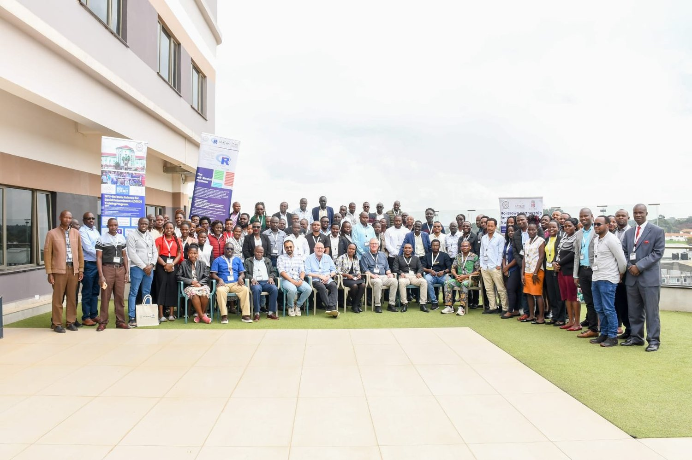

2026 Workshop (planned)
Archive of the program website
Applications are not open yet
Introducing the 9th Workshop on Advanced Biostatistical Methods
Theme: “Causal Modeling & Machine Learning with Applications to Social Determinants of Health”
Dates: To be announced
Host: AMPATH / Moi University School of Medicine
Location: To be announced
Accommodations: To be announced
Application deadline: To be announced
Note: This course is primarily hands-on and centered around group-based activities rather than traditional lectures. It is designed for those who already have experience using statistical software such as R, SPSS, SAS, Stata, or Python for advanced data analysis. Activities will be mainly conducted in R and there will be no instructions on the basics of coding given.
Applications will be reviewed by the course organizers and invitations will be issued no later than a date to be announced.
NAMBARI, the Moi-Brown Partnership for HIV Biostatistics Training, and the Data Science for Social Determinants program are pleased to announce a training workshop that is primarily hands-on and centered around group-based activities rather than traditional lectures. Activities will be focused on teaching students different techniques in machine learning and causal modeling that they can apply to their own work. We will also hold a brief meeting during the workshop to discuss our Social Determinant Working Group for those who are interested in getting involved.
Target audience
Professional statisticians, data analysts, university faculty members, and graduate students in sub-Saharan Africa working at universities, research centers, government ministries, or NGOs that are focused on the analysis of biomedical and health data. This workshop is geared toward those with advanced training in statistics. Attendees must have a strong working knowledge of basic statistical analysis methods, including regression analysis, and familiarity with the use of statistical software such as R, SAS or Stata. Activities will be mainly conducted in R and there will be no instructions on the basics of coding given.
Cost and other requirements
- Selection for both the course and working group is by application only. Tuition for the course is free.
- Accommodation at EKA Hotel Eldoret will be provided for participants from outside of Eldoret.
- The cost of transport to and from Eldoret must be covered by the attendee.
Equipment
Participants must bring a laptop with R software installed (instructions will be provided in advance).
Workshop structure and content
Details will be provided closer to the meeting date, and some guides and content materials will also be provided before the meeting to accepted applicants.
Instructors
- Rumi Chunara, PhD is Associate Professor of Biostatistics and Computer Science, and Director of the Center for Health Data Science at New York University.
- Joseph Hogan, ScD is Professor of Biostatistics and Deputy Director of the Data Science Initiative at Brown University.
- Ann Mwangi, PhD is an Associate Professor of Biostatistics, School of Science and Aerospace Studies, Moi University and Adjunct Assistant Professor at Brown University.
- Ziv Shkedy, PhD is a Professor of Biostatistics and Bioinformatics at Hasselt University in Belgium.
Funding: Funded by U.S. NIH-FIC Grants D43TW010050 & 1U2RTW012121.
